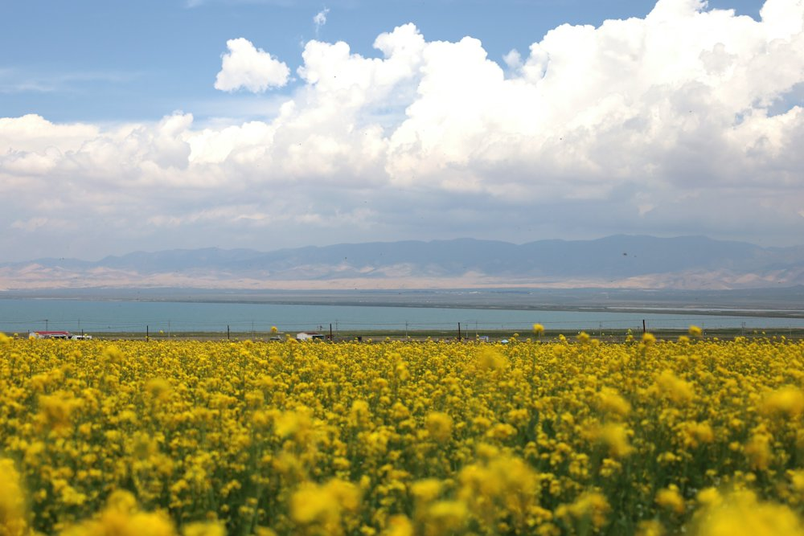

自然历年规律西北
青海湖环湖
Qinghai Lake Loop · 青海 · 海北
最佳时间
7 – 8 月油菜花开+环湖赛季节
7 月中下旬湖畔油菜花与环湖国际公路自行车赛同期，8 月中旬花谢。
中国最大咸水湖：7 月环湖金色油菜花带与湛蓝湖面撞色，经幡在垭口猎猎作响。
不能错过
- 环湖西路一段贴湖最近，日出机位集中
- 7 月恰逢环湖赛，可偶遇公路车大部队
当地美食
湟鱼(湟鱼禁捕，品尝人工养殖)青海湖裸鲤历史名鱼，现以养殖合法品尝
环湖酸奶牧家酸奶奶皮厚实
烤全羊宴环湖帐篷营地宴席
尕面片环湖公路服务员的热汤面片
旅人提醒
- 湖边住帐篷宾馆看星空银河是加分项
- 高原紫外线强，防晒等级拉满
月度热力与气温
-5°
1
-2°
2
4°
3
11°
4
16°
5
20°
6
22°
7
21°
8
17°
9
11°
10
2°
11
-5°
12
适宜度（柱高，5=最佳）依据活动窗口与气候整理；气温为月均高温近似值（°C），仅供规划参考，出行前请查当地预报。
编辑核实笔记 · 整理自海北州公开资料，非亲历；环湖路以交通公告为准。
预订 / 官网
官方页面：查看官网 / 官方信息 ↗ · 票价与预约以官网为准
联盟链接含占位 tracking id（Booking/Klook/Trip.com），上线替换为真实 ID 即生效；均带 utm 参数与点击统计。